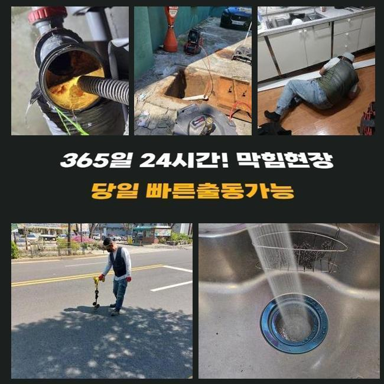
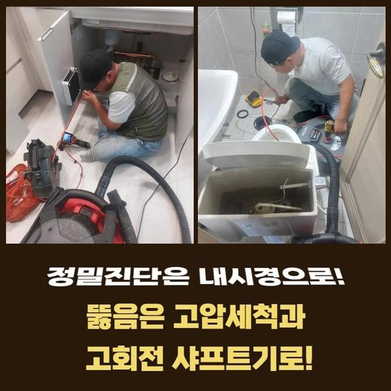
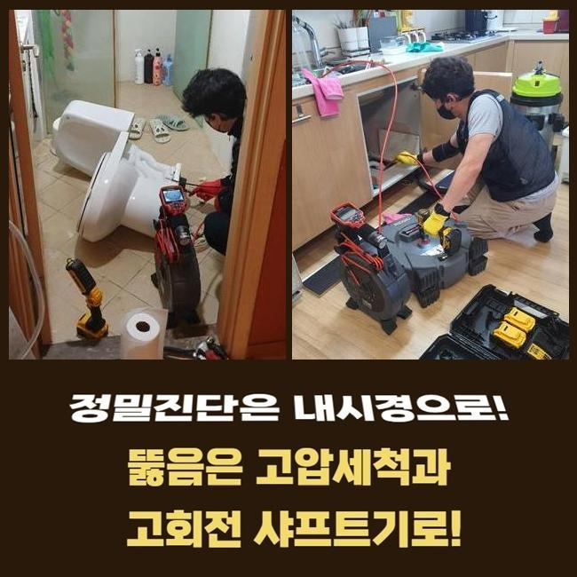
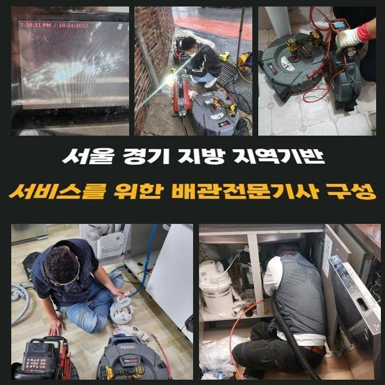
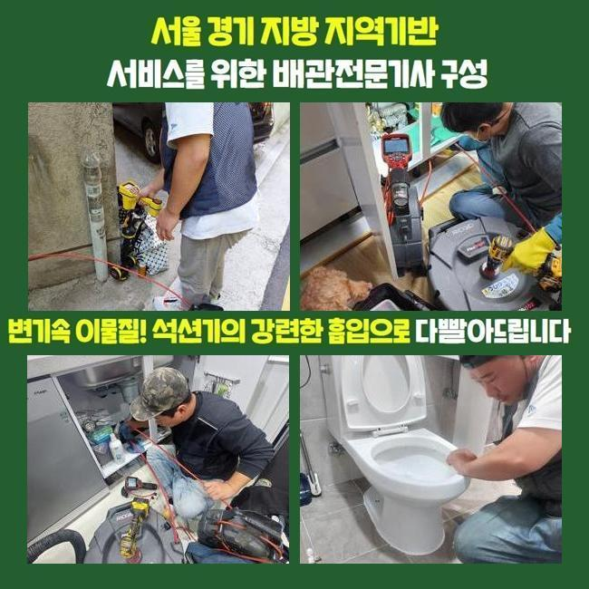
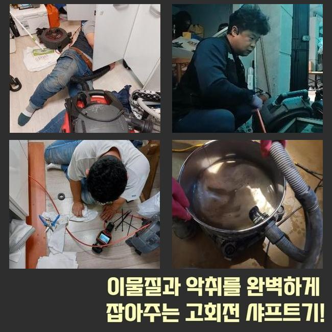

🏠 용인 보라동변기배관막힘 상하동 하수구뚫는비용 물샘전문업체
용인 보라동 싱크대막힘 전문 시공 후기

📋 작업 개요
- 위치: 용인 보라동, 보라동, 용인
- 서비스 유형: 싱크대막힘, 변기막힘, 하수구막힘, 배관막힘, 누수수리, 역류해결, 뚫는업체, 배관청소, 고압세척
- 작업 일시: 2025. 1. 31. 16:14
- 업체명: 하수구수사대 (010-5615-2118)
🔍 문제 상황
용인 보라동변기배관막힘 상하동 하수구뚫는비용 물샘전문업체
얼마전 상가내부의 개수대에서 야기된 배수장애를 시정한 현장을 안내해볼게요
이해하기 쉽고 실용적인 내용들이 상당하니 집중~!
사무실이란 스팟에서 발생된 일이다 보니 자가조치들로 해결하려는 시도들이 눈에 띄었죠
전문인은 해결책을 어떤 과정으로 실시하는지 더불어 하수관을 유지시키는 방법들도 쉽게 정리하겠습니다
의뢰인은 이용할때 조리를 위한 장소가 아니였기에 더러워진 부분을 뚫어야되는 사태가 없을것으로 여겼다고 말하셨어요
이곳의 경우 식재료를 사용안하는 공간이라서 주기성을 갖춘 예방책 실시가 진행되지 못하는 사례들이 많은데요
저희의 전문가들은 장치를 준비시켜 출동했죠 현장도달 후 하수관을 체크해봤죠
여기저기 확인하니 솟구치는 문제들은 관찰되지않았지만 답답하게 배출되고 있었는데요
이럴땐 갑작스럽게 거꾸로 흘러 역류해버리는 증상들이 생기게 됩니다

🔎 원인 분석
💡 전문가 진단: 정밀 진단 장비를 사용하여 슬러지의 고착 여부를 판명하고 타격/세척 작업을 실시했습니다.
그리하여 석션으로 불리우는 장비를 사용하여 잔존하는 하수찌꺼기부터 흡입시켰어요
석션장비는 진단전에 수월한 관찰을 위하여 이용되고 찌꺼기와 같은 잔해를 걷어낼 때 효과좋은 역할들을 수행합니다
썩션통에 하수들이 빠져나왔으나 그럼에도 답답하게 흘렀죠
석션장치 이용 이후에는 내시경기기로 깊숙한 부분도 체크했죠
내시경 라인을 투입시키니 기름들이 떡하니 자리잡아 통로길이 좁혀지게된 상태였습니다
식재료 이용을 할 일이 없는 장소인데 왜 잔해들이 생긴거지? 생각할 수 있지만 사무실이라면 철저히 관리책 실시가 진행되지 못해서인데요
우선은 간식이라던지 커피의 잔여물질 혹은 기름이 엉키게되어 슬러지들을 형성시켜요
내시경도구로 하수도를 관찰하며 샤프트장치로 기름성분을 분해하며 점차 하수관을 청소하니 내부 구경이 확보되면서 배수라인이 넓어졌어요
기름의 경우엔 내시경에서 빨간색을 비추기에 이물이 제거된다면 영상화면도 선명하게 탈바꿈되는것을 볼 수 있어요
샤프트세척을 실시했으나 물이 아직도 느린속도로 내려가는 상태였어요
그리하여 수돗물을 따로 받은 다음 한꺼번에 부어보니 특정한 위치에서 고이며 막혀버리는 문제들이 있었습니다

🔧 작업 과정
하수가 고인 상태라는건 여타 트리거들이 존재한다는 것을 의미합니다
슬러지말고도 여타 트리거들이 분명하다는 걸 보여주는것이기에 출수부분까지 체크할 필요성들이 분명했습니다
저희전문진은 만성적인 씽크대막힘의 까닭들을 파헤치기위하여 내시경 라인을 깊숙한 지점으로 투입시켰습니다
마침내 발견하게 된 건 배수관의 특정부분이 바닥라인에 매립되어 있지 못하고 바깥에 드러난 채로 설치되어진 사실이었는데요
실내쪽에서 내시경으로 관찰하는게 어려운 탓에 바깥에서부터 역순으로 투입하게끔 특정부분을 뚫은 후 그 부위에 내시경 내시경케이블을 밀어넣었습니다
내시경 선을 투입하니 이물들로 막혀버린 공간을 발견했죠
사무공간에서는 하수라인이 붙어있는 모습이 아니였고 다른 배수관이 외측으로 빠져나가는 상태였습니다
계속 그 길 따라서 가보니 세면대쪽에 폐기물이 떡하니 가로막아섰죠
주방쪽의 하수관이 아니라 예상못한 지점에 큰 이물이 존재해서 찾아주기까지 애를 먹었지만 결국 지속적인 막히는 문제의 주된 이유를 찾아냈는데요
수회에 걸쳐 스팟을 확인하고 이물제거가 필요한 포인트의 pvc 하수도를 타공해 이물들을 배출해냈는데요
제거시키니 둥근 합성수지였는데 언제 빠지게된건지 알 길이 없었으나 크기도했고 중간에 놓아진 상태면 통수되는것이 불가능에 가까운 물질이였죠
주방의 하수관과 배수장애를 유발시키는 잔해물들을 청소해주는 과정들을 완료했더니 배수과정이 수월해짐에 따라 바로잡는 단계가 끝났어요
더불어 고객님은 냄새발생에 관련해서도 문의하셨어요 작업하면서 체크해보았는데 관로에서 발생하는것을 확인했죠
트랩부속에 균열들이 보였는데요 해당 장소에서 정리하고 호환가능한 트랩부속품으로 교체도 이상없이 해드렸습니다
확인을 위해 탕비실쪽으로 가 개수대에 수돗물을 받고 잘 내려가는지 보았더니 언제 그랬냐는 듯 이상없이 수월하게 내려갔습니다
골치아팠던 통수가 안되는 트러블도 오차없이 바로 잡혔어요


✅ 작업 완료
진단을 철저히 해 결국엔 문제의 이유를 추적하며 결국 막힌 연유를 찾게되었고 시설물 이용도 한결 나아졌죠
이와같이 고객분들이 장기적으로 고생하시지않게 시공절차를 완료하게되었습니다
사용하실때 배수구로 기름들과 음식물들이 못들어가게 관리해주시고 점검도 정기적으로 진행해주시면 좋습니다
저희의전문가는 재발하지않는 작업계획에 초점들을 맞춰요 이에 작업을 하면서도 저희들이 왔다간 후 수리한 부분에서 또 같은 증세가 야기되면 다시 찾아뵈어 as들도 제공해드려요
통수가 안되는 사태가 벌어져 문의를 염두에 두고 계시면 저희의 전문가들에게 문의하시는건 어떠세요?



⚠️ 베란다 누수 및 방수 관리 방법
- ✅ 비가 많이 올 때 창틀 주변이나 아래층 천장에 얼룩이 생기는지 정기적으로 확인해 보세요.
- ✅ 우수관 주변 실리콘 마감이 들뜨거나 깨진 틈새가 있는지 손상 여부를 수시로 체크하세요.
- ✅ 베란다 바닥 타일의 줄눈(메지)이 소실되면 그 틈으로 물이 침투하여 누수가 유발됩니다.
- ✅ 누수 의심 증상 발견 시 방치하면 아래층 손실이 커지므로 즉시 전문가의 진단을 받으십시오.
💡 핵심 정리
- 확실한 장비 작업(내시경 점검 및 샤프트 스케일링)으로 원인을 뿌리 뽑습니다.
- 작업 후 1년 이내에 동일한 부위 재발 시 100% 무상 A/S 서비스를 보장합니다.
- 서울 · 경기 · 인천 전 지역에 24시간 언제든 긴급 출동할 수 있도록 항시 대기 중입니다.
❓ 자주 묻는 질문 (FAQ)
🚨 용인 보라동 싱크대막힘 문제로 고민이신가요?
정확한 원인 진단과 확실한 시공으로 재발 없는 해결을 약속드립니다.
24시간 긴급 출동 | 서울 · 경기 · 인천 전지역 | 1년 내 재발 시 무상 A/S